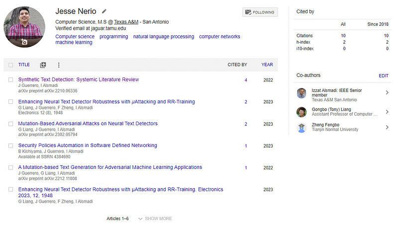

Is a Masters of Computer Science worth it?
Should you go for a graduate program?
What is it like to go through a masters program?
Well, I can't tell you these things.
I can give you my experience and it should help you decide.
There are realities universities are not telling you about the job marketplace.
It is a lot more dreary than you might imagine.
I remember the promises of a job.
The advertisements that after a degree, "the world is your oyster".
Though in truth the world of academic achievement is a bit more dystopian than you may think.
First I will tell you what and how I learned, and then I will go into the details of whether it was worth it.
I will also talk about getting a job with a graduate degree.
Lets take a look at a Masters degree in Computer Science.
What I learned
I mostly learned through self-study.

My school guided me but 80%+ of my learning was self-imposed.
Students were passing by simply finishing assignments and not studying on their own.
I always felt they did not get the full benefit of the degree because of this.
In my self-study I switched technologies every semester based on what we were learning in class.
I followed the syllabus, took Udemy courses and finished a good majority of them around the syllabus.
This meant if I took a databases class I took a databases Udemy course.
If I took a machine learning class, I took a PyTorch Udemy course.
When we were learning penetration testing and Linux exploits, I went through a Linux Udemy course.
The one skill I learned from my university which can only be taught at university was academic writing & research.
Now that was a very difficult thing to figure out.
What do academic journals want to see?
How do you format and research for your writing?
Posting on Google Scholar and journals is very difficult to learn at the beginning.
Academic writing is its own class of literary art.
And although its nice to have research papers officially published in your name, no one really cares.
I remember posting my first three research papers in academic journals.
Heck I even got put into a Spanish Machine Learning textbook in Mexico.
But, if you mention this in an interview it grants you 0 points.
You do not pass go and you do not collect $200.
Best case scenario you get a "that's nice" and a superficial smile.
Maybe amongst friends you can flex with it and get a few respect points.
In the end I took 14 classes and 1 community college course for that degree.
The classes & lectures were difficult but actually became easy because I learned ahead of the material.
I feel the degree was worth it, not because of the school teaching me things.
But, because it gave me the motivation to teach myself with intensity and gave me the confidence to identify myself as a "programmer".
It is quite possible I am actually less employable now
I will be honest, I do not have a job.

After graduating I am unable to even get interviews despite having a very strong resume, skillset and background.
I have a few software engineering friends that don't even have a degree and they get more interviews and even job offers.
One in particular says he rejects potential applicants who have a Masters of Computer Science because they are usually worse than those who are self-taught.
Take a look at these statistics:

53% in a 712 applicant pool have a Masters of Computer Science.
Only 3% have a high school degree as their highest form of education.
You are actually more distinguished by not having an academic degree.
If you do not have a college education and you get an interview, it is much more impressive to know about software development.
The employer simply has lower expectations for you.
Exceeding them is much simpler.
And this statistic is not an anomaly.
If you get LinkedIn Premium and look at the statistics for every job you will see these stats.
The software engineering market is simply overrun by graduate student applicants.
This degree has lost all meaning.
Why it was worth it
For me in particular it was worth it.
Not because it improved my job prospects, because it probably didn't.

But because it was free.
I had a full ride scholarship to whichever major I chose due to my high grades and academic achievement.
Before the graduate program it took me 4 months to decide between a degree in social work and a degree in Computer Science.
Both were free.
I chose Computer Science for the job prospect and because I love programming.
In the thing I set out to do I would say that graduate degree, that degree in Computer Science was a bust.
It did not fulfill the job I desired it to do from the beginning.
But, I didn't pay for it.
So I feel it came out even.
I have applied to over 1,300 jobs
At this point the only reason I am still applying for software engineering jobs after over a year is sunk cost.

I put so much time and effort into learning to program.
7 years of work to be precise.
I would love to actually use it and continue using it.
I have applied to over 1300 jobs and get an interview in about 1/100 applications.
I feel I have come so close to getting a job a few times.
I have gotten to the final stages of interviewing twice.
We will see how this continues.
My degree at this point is worth more for the confidence and dedication it gives me to the job process than the certification after the fact.
Conclusion
The reality about graduation and state of the job market is a bit dark.
For me though, a Masters Degree was worth it.
But that may or may not be the case for you.
It all depends on your circumstances.
Anywho, I hope you learned something...
Happy coding!
Resources
Is a college degree worth it: Do I Need a College Degree To Become an Awesome Programmer?
How I got a 4.0 in Computer Science: Your Ultimate Guide: How to Get a 4.0GPA in Computer Science